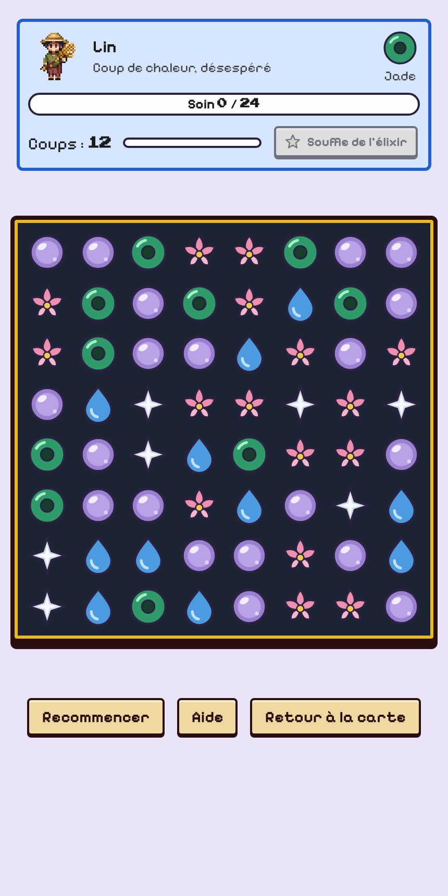
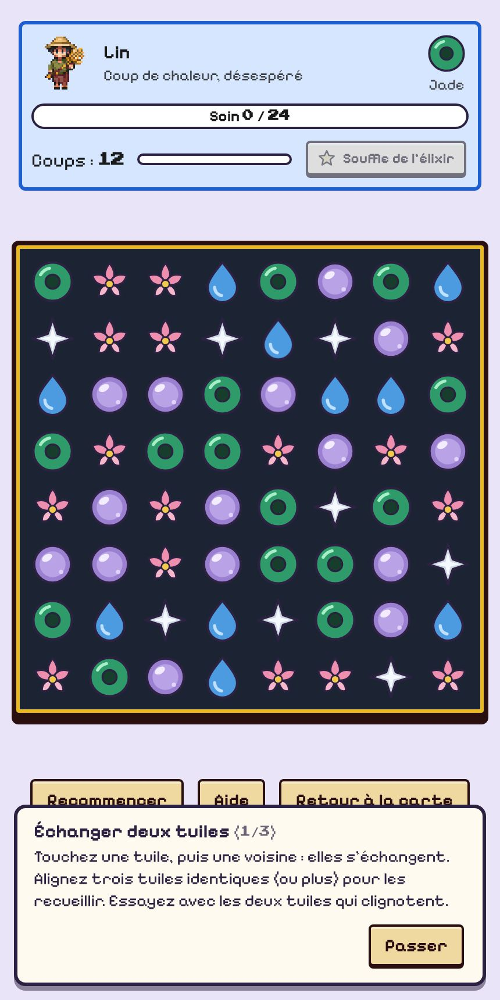
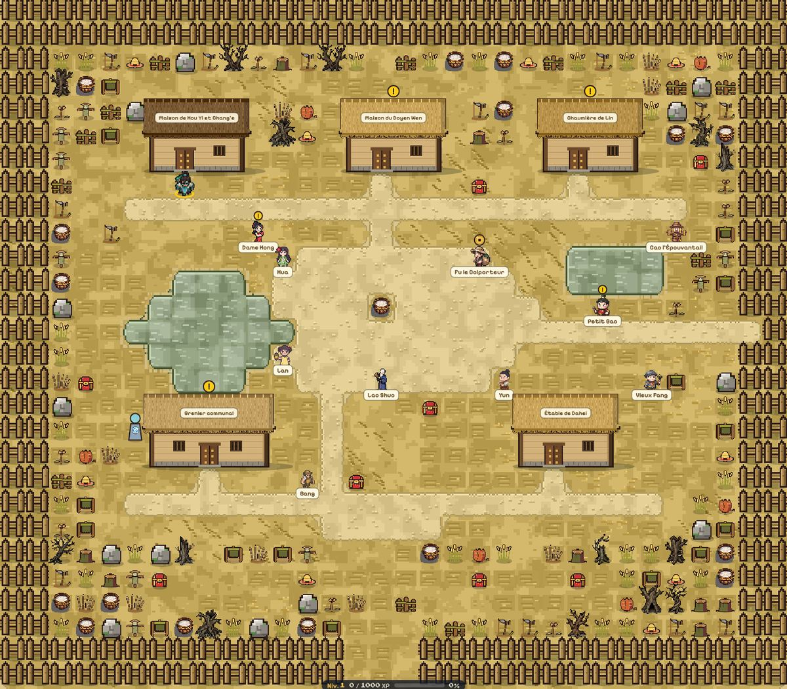
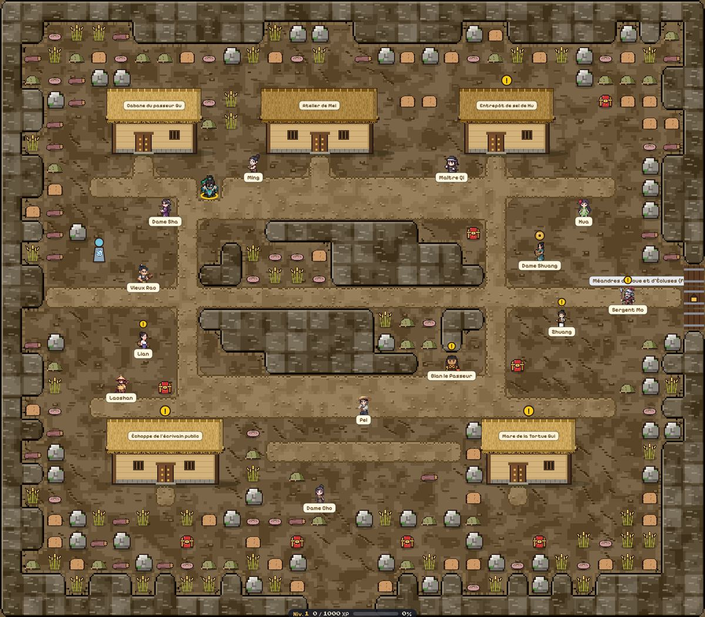
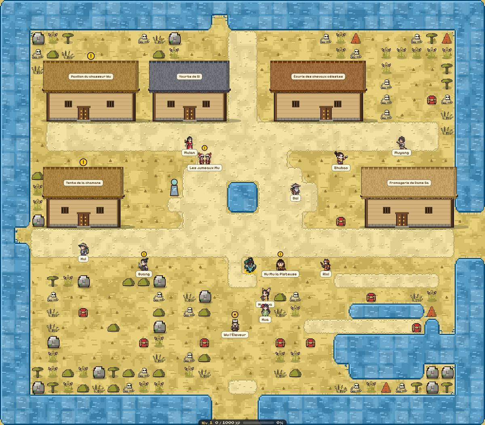

Chang’e : soigner les villageois
À trois moments de l’histoire, vous jouez Chang’e. Il n’y a rien à combattre : il suffit d’aller voir les villageois blessés et de les soigner (15 au total, cinq par village). Rien ne peut être raté : on peut recommencer autant qu’on veut et les soins déjà faits sont conservés.
Quand
| Épisode | Dès que vous abattez | Village de Chang’e |
|---|---|---|
| Épisode 1 | Soleil des Mirages | Hameau de Dongqiao |
| Épisode 2 | Soleil des Orages | Port-à-Sec de Hekou |
| Épisode 3 | Soleil Lâche | Enclos de Caoyuan |
Quoi faire
- Marchez vers un blessé (liseré rouge) pour ouvrir son puzzle de soin. Les autres habitants se baladent et n’ont rien à vous demander.
- Récoltez l’énergie qu’il demande (indiquée à droite de son nom) en alignant trois tuiles ou plus, avant la fin des coups. Un alignement de quatre ou cinq rend plus de points.
- Son liseré tire vers le vert à mesure des soins. Une fois guéri, passez au suivant : quand les cinq sont soignés, l’épisode se termine.


Épisode 1 : Hameau de Dongqiao
Après avoir abattu Soleil des Mirages. Allez voir les 5 blessés, marqués d’un liseré rouge (les cercles de la carte indiquent où ils se trouvent).

12345| Blessé | Énergie demandée | Objectif |
|---|---|---|
| 1. Lin Coup de chaleur, désespéré | Jade | 24 points en 12 coups |
| 2. Doyen Wen Épuisé d'avoir porté le village | Eau claire | 24 points en 12 coups |
| 3. Ping Évanouie à la rizière sèche | Lotus | 26 points en 12 coups |
| 4. Petit Bao Enfant déshydraté | Perles de nacre | 26 points en 11 coups |
| 5. Grand-mère Tao Malaise de la doyenne des commères | Énergie argentée | 28 points en 12 coups |
Épisode 2 : Port-à-Sec de Hekou
Après avoir abattu Soleil des Orages. Allez voir les 5 blessés, marqués d’un liseré rouge (les cercles de la carte indiquent où ils se trouvent).

12345| Blessé | Énergie demandée | Objectif |
|---|---|---|
| 1. Gu Soif, bateau échoué | Eau claire | 34 points en 12 coups |
| 2. Mei Fièvre de boue | Lotus | 34 points en 12 coups |
| 3. Hu Marchand de sel, les poumons pris | Jade | 38 points en 12 coups |
| 4. Lian Enfant fiévreuse | Perles de nacre | 36 points en 11 coups |
| 5. Vieux Rao Calfat sans coque, épuisé | Énergie argentée | 40 points en 12 coups |
Épisode 3 : Enclos de Caoyuan
Après avoir abattu Soleil Lâche. Allez voir les 5 blessés, marqués d’un liseré rouge (les cercles de la carte indiquent où ils se trouvent).

12345| Blessé | Énergie demandée | Objectif |
|---|---|---|
| 1. Zi Bergère, troupeau dispersé | Jade | 44 points en 13 coups |
| 2. Wu Morsures et fièvre | Lotus | 46 points en 13 coups |
| 3. Dame Sa Coup de chaleur | Perles de nacre | 48 points en 13 coups |
| 4. Bai Vieux nomade, cœur fatigué | Eau claire | 50 points en 13 coups |
| 5. Mulan Jeune archère mordue | Énergie argentée | 54 points en 13 coups |